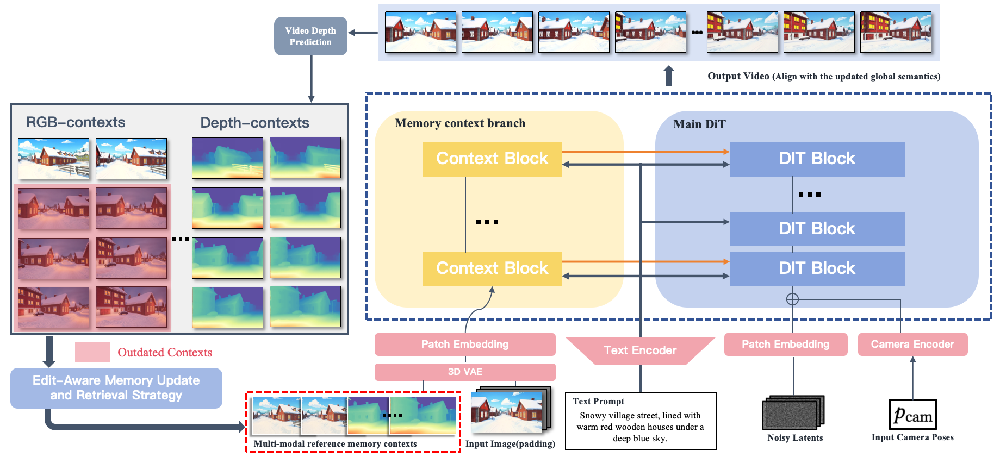
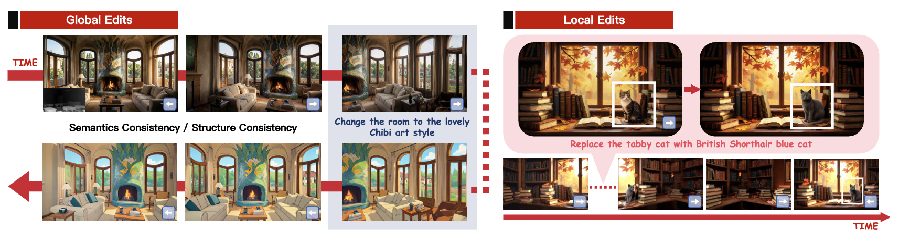

Consistent Video Generation Across Edits via Disentangled Context Memory
Abstract: Consistent video generation under editing operations requires persistence: when edits modify scene appearance or layout, subsequent generations should remain coherent across time and viewpoints. However, existing memory designs struggle to maintain long-term consistency after such modifications, as stored contexts may become outdated or invalid. To address this, we propose PermaVid, a novel framework built upon a multi-modal context memory that disentangles spatial context into semantic appearance and geometric structure, together with an edit-aware memory update and retrieval strategy that keeps memory evolution aligned with subsequent observations. Specifically, we develop two complementary memory banks: an RGB context memory that captures appearance-aware observations while implicitly encoding geometry, and a depth context memory that preserves geometry-only structure disentangled from semantics. Building on this design, we introduce a memory-guided video generation model that performs multi-modal feature fusion under reference conditions drawn from mixed-modality memory contexts. Experiments demonstrate that our method maintains strong long-term semantic and structural consistency after edits, significantly outperforming state-of-the-art methods.


@misc{yang2026permavid,
title={PermaVid: Consistent Video Generation Across Edits via Disentangled Context Memory},
author={Shuai Yang and Bingjie Gao and Ziwei Liu and Jiaqi Wang and Dahua Lin and Tong Wu},
year={2026},
eprint={2606.16449},
archivePrefix={arXiv},
primaryClass={cs.CV},
url={https://arxiv.org/abs/2606.16449},
}